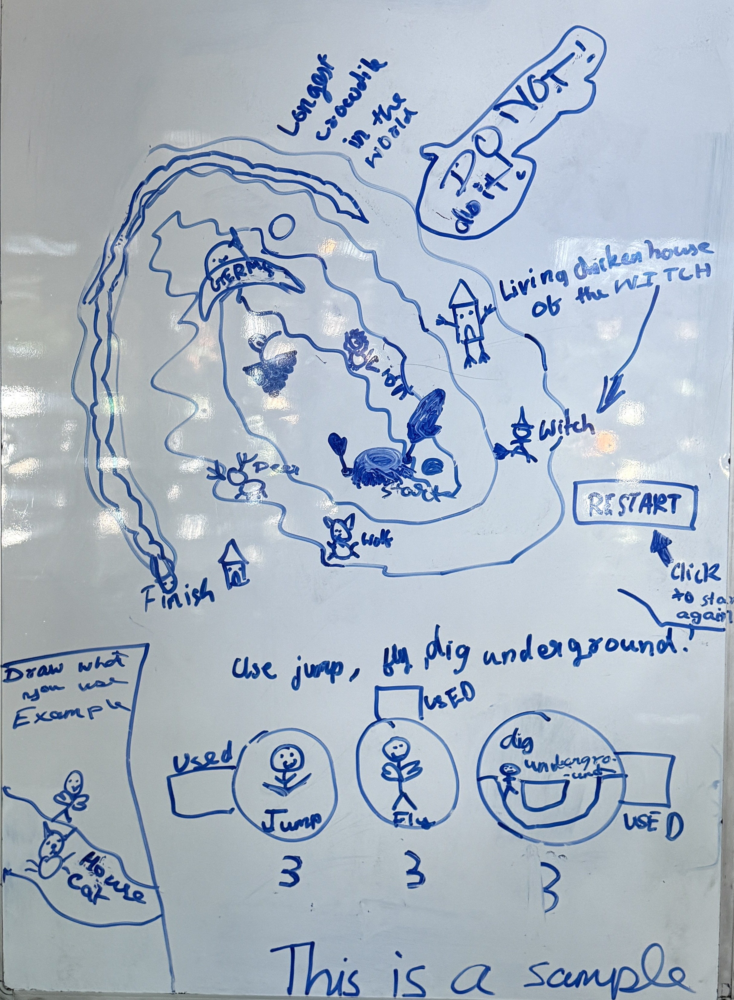

Four AIs, one kid's game
A nine-year-old designed a game: a circular maze you fly through like Flappy Bird, steering with three actions. Then we ran an experiment — we handed the same short brief and the kid's design to four free AI assistants and asked each one to turn it into a game a child could actually play. No hand-holding, no cleanup afterward. What you play below is exactly what each model produced.
The one-paragraph brief every model got:
that's a game my 9 year old designed and wants to build, it is a circular maze and playing is similar to flappy bird with 3 actions supported written at bottom, can you make this a real game they can play
The notes on the cards below are the designer's own words. Play them and see if you agree — each opens full-screen and runs in a locked sandbox, so it's safe to just click in and try.

The full one-page game design is here: Game design — one page.